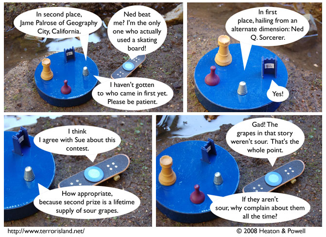

Strip #259
— Wednesday, February 6, 2008
Ned is from the Dentist Dimension.
Notes, Thoughts, &c.
Ben’s Notes
A lot of the fan feedback we’ve been getting or imagining recently has expressed outrage at Ned not being disqualified. If we reacted more to fan feedback, we probably would have changed the plot to have him not be declared the winner, but I guess that’s not how this works.
Should I even be calling it “fan feedback”? I’m not sure if that sounds vaguely patronizing or not.
Lewis’s Notes
Guys, my favorite historical figure is Azariah Boody.
I wrote Lewis’s comments today. -Ben